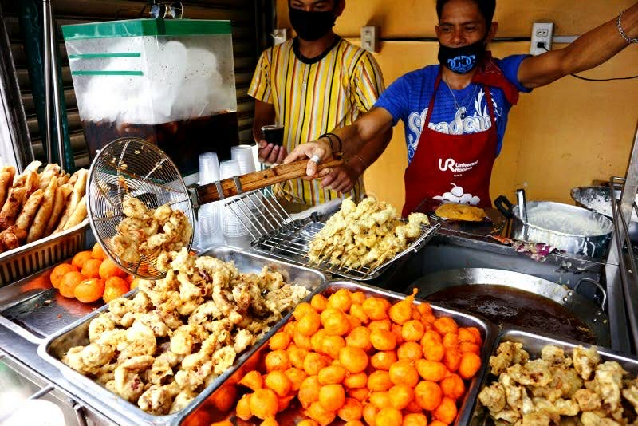

Mula Kanto Patungong Kusina
Nagsimula ang lahat sa isang simpleng pangarap noong dekada '90: ang dalhin ang pagkaing kalsada sa isang mas mataas na antas nang hindi nawawala ang tunay na lasa nito.

Nagsimula ang lahat sa isang simpleng pangarap noong dekada '90: ang dalhin ang pagkaing kalsada sa isang mas mataas na antas nang hindi nawawala ang tunay na lasa nito.
"Bringing the authentic soul of the streets to the spotlight."